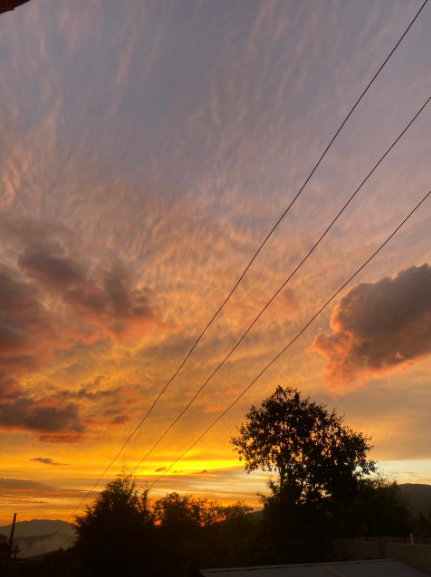

SANTA MARIA CUQUILA
|
|
|
| Historia Galeria Ubicacion Contacto |  |
. El pueblo magico conocido como Ñuu Nkuiñi(pueblo del tigre). se encuentra en la Mixteca Oaxaqueña, específicamente en el municipio de Tlaxiaco, Para llegar desde la capital de Oaxaca, la ruta más corta es por la supercarretera hacia Nochixtlán y luego a Huajuapan de León, hasta llegar a un entronque que dirige a Tlaxiaco. Esta región se caracteriza por se una comunidad indígena donde se preservan tradiciones ancestrales, especialmente en la música y los textiles.ud. Esta región, denominada la Mixteca, se divide en tres subregiones naturales: alta, costa y baja, siendo esta última la más alejada del Océano Pacífico |
|